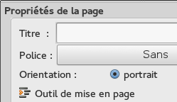
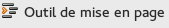
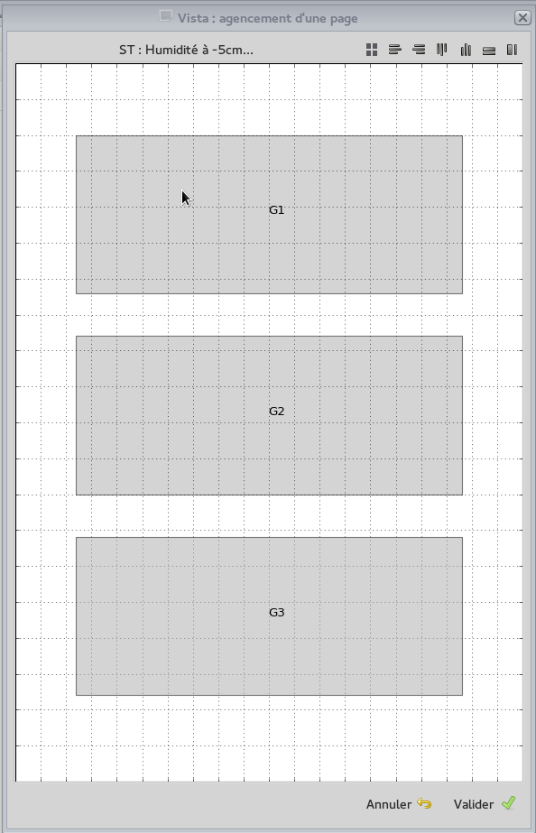
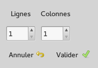
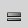
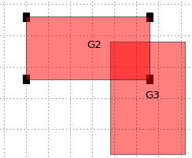
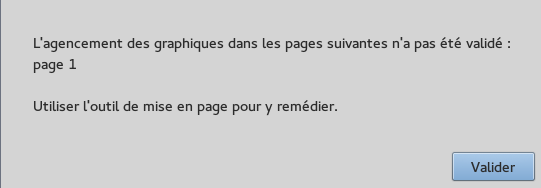

Par défaut, la mise en page dans Vista est automatique : les graphiques sont disposés les uns en dessous des autres et Vista optimise l'occupation de l'espace de la page en conservant des marges.
Vista permet également de personnaliser la mise en page : taille et position des graphiques peuvent être modifiés comme on le souhaite avec pour unique contrainte que les graphiques ne se chevauchent pas.
Pour ce faire, Vista propose une interface graphique.
Lancement de l'outil de mise en page


L'outil de mise en page

L'outil matérialise les graphiques dans la page par des rectangles. Le numéro du graphique dans la page est inscrit au centre du rectangle (G1, G2, ...). Lorsqu'on positionne la souris sur un rectangle, le type et le titre du graphique s'affichent en haut de la fenêtre (exemple ST : Humidité à -5cm).
Sélection d'un graphique :
Pour sélectionner un graphique on clique dans le rectangle avec le bouton gauche de la souris. Des poignées apparaissent à chaque coin du rectangle sous forme de rectangles noirs. Pour désélectionner un graphique, cliquer en dehors du rectangle.
Sélection multiple :
Pour sélectionner plusieurs graphiques, maintenir la touche ctrl enfoncée et procéder à la sélection des graphiques.
En cours de sélection multiple, un clic sur un graphique sélectionné provoque sa désélection.
Déplacer un graphique :
Pour déplacer un graphique il suffit de sélectionner le graphique en maintenant le bouton gauche de la souris enfoncé puis de déplacer la souris.
Il est possible de déplacer plusieurs graphiques simultanément. Pour cela, faire une sélection multiple puis relacher le bouton gauche de la souris. Ensuite, déplacer un des graphiques sélectionné. Tous les graphiques sélectionnés sont déplacés.
Modification de la taille :
Pour modifier la taille d'un graphique il faut d'abord le sélectionner. On clique ensuite sur une des 4 poignées et on tire sur la poignée en maintenant le bouton gauche de la souris enfoncé.
Il est possible de modifier la taille de plusieurs graphiques simultanément. Pour cela, faire une sélection multiple puis modifier la taille d'un des graphiques sélectionné. La taille de tous les graphiques sélectionnés est modifiée.
Aligner les graphiques :
Lors de la mise en page on a souvent besoin d'aligner les graphiques entre eux pour plus de clarté ou d'esthétique du document. On peut toujours déplacer et modifier la taille des graphiques à la souris, mais cela peut vite devenir fastidieux.
Vista propose une barre d'outils pour aligner les graphiques :
Pour connaître la fonction de chaque bouton, positionner la souris dessus : une information de type info bulle apparaît.
aligne selon une grille les graphiques.
Une fenêtre de définition de la grille (nombre de lignes, nombre de colonnes) s'ouvre.


donne la même largeur à tous les graphiques sélectionnés.Validité de la mise en page
La mise en page se doit de respecter la règle suivante : les graphiques ne doivent pas se chevaucher.
Le non respect de cette règle se matérialise dans l'outil de mise en page par la coloration en rouge des graphiques qui se superposent, comme l'illustre l'image suivante :

Ajout d'un graphique dans une page mise en forme
Lorqu'on ajoute un graphique dans une page où la mise en page a été modifiée, vista positionne le graphique plus où moins au hasard dans la page et demande à modifier la mise en page au moment où on visualise le document. Le message suivant apparaît :
